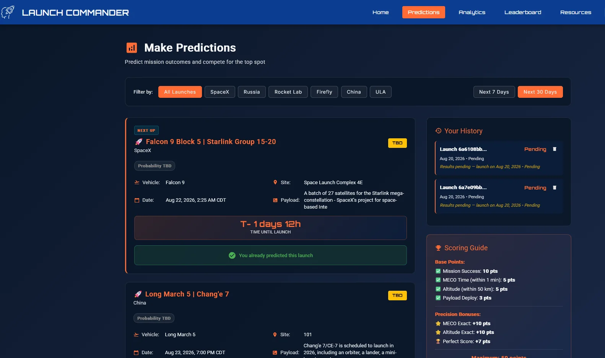
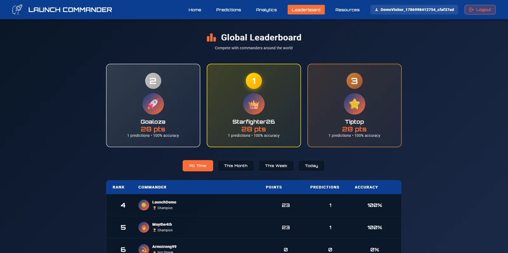
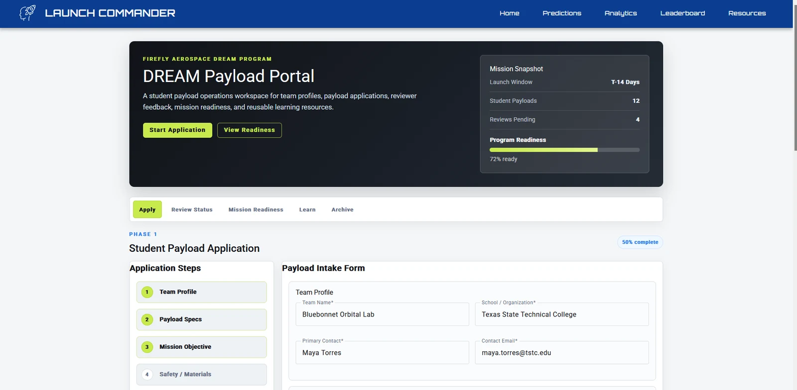
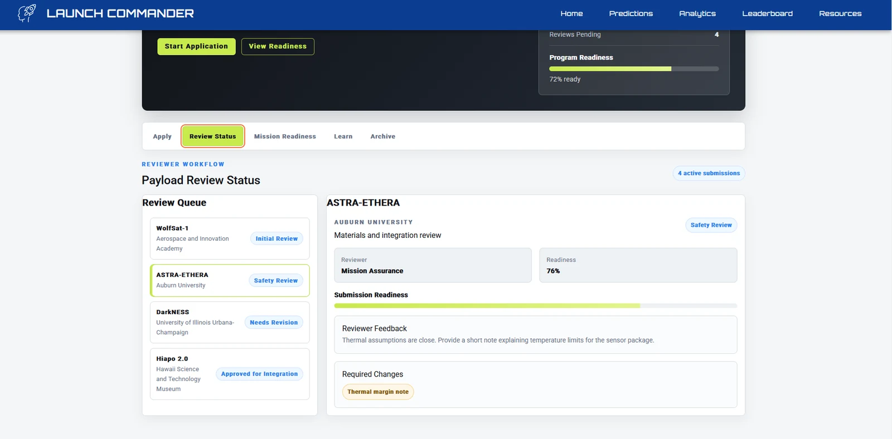
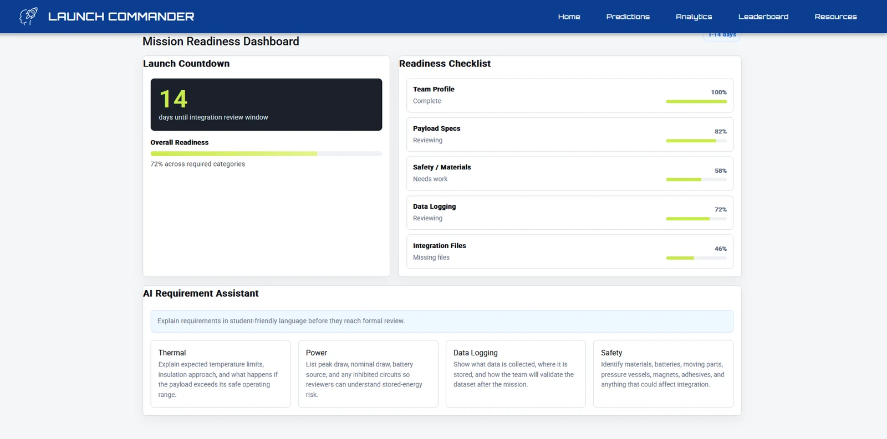

Flagship full-stack case study
Launch Commander
A production MEAN-stack aerospace application combining live launch data, authenticated predictions, scoring, analytics, leaderboards, and resilient cloud delivery.

Product overview
Launch Commander turns real launch information into an interactive prediction experience. Users create accounts, review upcoming missions, submit outcome predictions, accumulate points, inspect performance analytics, and compare results on a global leaderboard.
I developed the application across the MEAN stack and remained responsible for it after launch. That ownership expanded the project from feature development into authentication, environment configuration, production diagnostics, cloud migration, and recovery.
Prediction and scoring workflow
The prediction page brings mission data, filters, countdowns, a scoring guide, and personal prediction history into one workflow. The system records the user's choices, evaluates results after launch, and carries those outcomes into analytics and leaderboard rankings.
The interface makes a data-heavy process approachable by separating upcoming missions into clear cards and keeping scoring rules visible at the moment a decision is made.


DREAM Payload Portal
The idea began while I was preparing for a job fair involving Firefly Aerospace. A TSTC Computer Programming Technology fireside chat with a member of Firefly's software leadership gave me additional perspective on the company's work, and the DREAM program especially captured my interest.
I independently designed a companion portal concept for student teams preparing DREAM payload entries. The prototype brings application intake, reviewer feedback, mission-readiness tracking, and reusable learning material into a single guided workspace.
DREAM also represents how I approach self-directed product work. When a mission or workflow interests me, I enjoy turning it into a tangible system without waiting for a formal assignment. That initiative lets me investigate unfamiliar workflows, make product decisions, and demonstrate what I could contribute to a team.
The portal currently runs as a front-end demonstration within Launch Commander. It does not save submissions to a production database, but its states and workflows are organized for a later persistence layer. It is an independent portfolio concept and not an official Firefly Aerospace product.



Agent-assisted development
I used the DREAM prototype to deliberately practice working with coding agents. I designed the information architecture, user flows, visual direction, requirements, and demo data, then supplied my existing Launch Commander application shell as a reusable template.
I directed agents to implement scoped portions of the portal, evaluated the output against my design, and refined the result through review and iteration. Reusing the established shell reduced setup work and let me concentrate on translating a real program workflow into a coherent product experience.
Production migration
When education hosting credits ended, I treated the repository as the portable source of truth and moved the backend without rewriting the application. Railway was replaced by Render, but authentication and runtime instability made that environment unsuitable for the live demo.
I prepared an AWS Lightsail replacement, restored environment-specific configuration, validated the API against the existing Vercel frontend, and switched production only after the new path worked. This kept the application publicly available through the provider transitions and turned a hosting problem into practical experience in recovery and platform independence.
- Stage 01RailwayOriginal backend hosting until education credits ended.
- Stage 02RenderMigration target that exposed authentication and runtime reliability problems.
- Stage 03AWS LightsailStable replacement deployed and validated before the production cutover.
Outcome
One application demonstrating product development and operational ownership.
Launch Commander shows more than a completed feature set. It demonstrates how I design an experience, work across a full JavaScript stack, integrate changing external data, use agents under deliberate human direction, protect application continuity, and adapt deployment architecture when real platform constraints appear.
Continue exploring